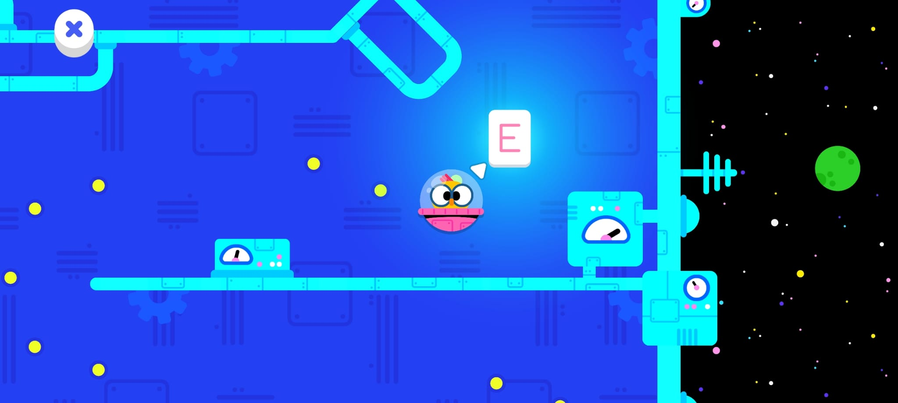
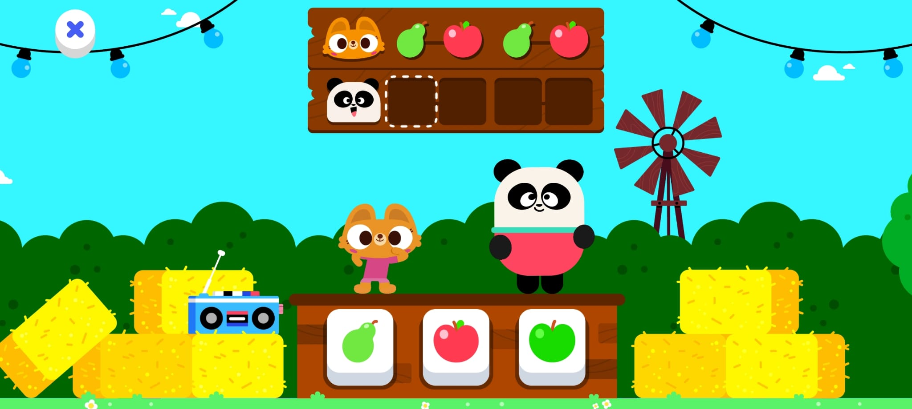
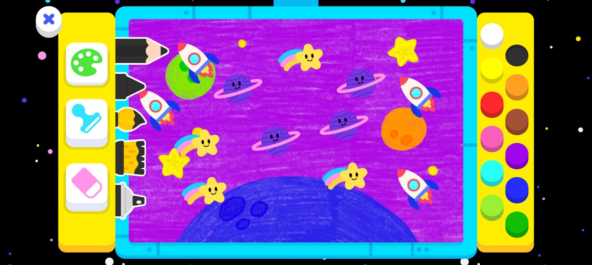
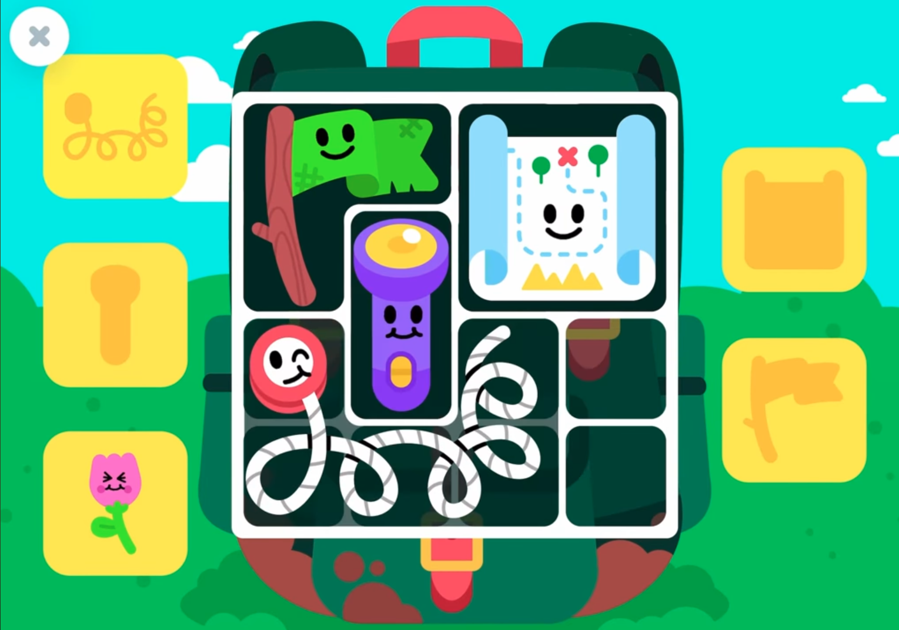

User testing with kids; integrate findings into design.
Data-informed balancing and feature improvements.
Tools
Unity, spreadsheets
Amplitude / Looker (analytics)
About the role
Game designer for two and a half years. Responsible for the game design, since the concept phase until the end of development, of
14 educational game templates. The games are published inside the Lingokids app and include puzzles, story-driven games,
arcade games, logic games and creativity games, for ages 2–8. For every game I worked on, my responsibility was to design systems
and mechanics, levels, and UIs, and work in a small team with an artist and a programmer to develop the game from beginning to end.
I created concepts from scratch, pitched ideas and sketches, then produced high-level concept documents and GDDs along with
Unity prototypes. During development my role was to supervise the design and make sure the game’s philosophy was properly
understood and implemented, assisting all departments when needed, and balancing/tweaking systems to be appropriate for
our players. After publishing, I took part in data analysis and polishing actions. Throughout development, I also prepared,
attended and analyzed in-person user tests with kids.
Selected examples
Bouncing Billy is an arcade game in which the player moves a spaceship in a map full of obstacles looking for
letters that form a word. Level design was key: spaces needed to be wide and backtracking had to be smooth and readable.

Bouncing Billy — arcade letter hunt; wide, backtrack-friendly navigation.
Photo Album — open exploration + timed taps to photograph animals.
Had the chance to rework the game Photo Album, which is a exploratory game about navigating an open map to find animals and take pictures of them. Some animals are hidden;
others fly by briefly, leaving only seconds to tap and take the picture. An in-game album lets kids revisit their photos aloing with reading some animal facts. The game can be checked here: lingokids.com/photo-album-game
Wagon Catch approaches counting: objects fall from the sky and the player must collect a target amount.
Power-ups, boosters and punishing power-ups modify the loop and pacing.
Wagon Catch — counting loop with boosts and punishers.
Tiny Tales — narrative sequencing with a narrated payoff.
Tiny Tales is one of the first narrative-driven games at Lingokids. Players order cards to build a story; once
solved, a narrator tells it back to reinforce comprehension and sequence.
Pattern Dance teaches patterns and sequences in a kid-friendly way. A character dances to a song with repeating
elements; players must replicate the pattern.

Pattern Dance — teach patterns/sequences through choreography.
Spatial Puzzle — tangram-style construction.
Spatial Puzzle uses tangram pieces to construct a figure that “comes alive” after the player finishes building it properly.
Artist Playground is a creativity game, an open play tool in which several brushes, backgrounds and stamps are provided to the player. This game had no concrete objectives rather than letting the players experiment and create: just providing the tools to let the players set their own goals for their drawings.

Artist Playground — creativity sandbox with brushes, backgrounds and stamps.

Packing Puzzle - Organization puzzles for kids
Packing Puzzle is a Tetris-like sort of puzzle, similar to early Resident Evil inventory systems, but adapted for kids. Takes also as reference some Professor Layton puzzle minigames.
Photo Camera (AR) — mobile AR toy-camera that overlays characters/props on the real world and lets kids snap photos while trying to do a specific emotion with their faces. Can be checked out here: lingokids.com/photo-camera-ar